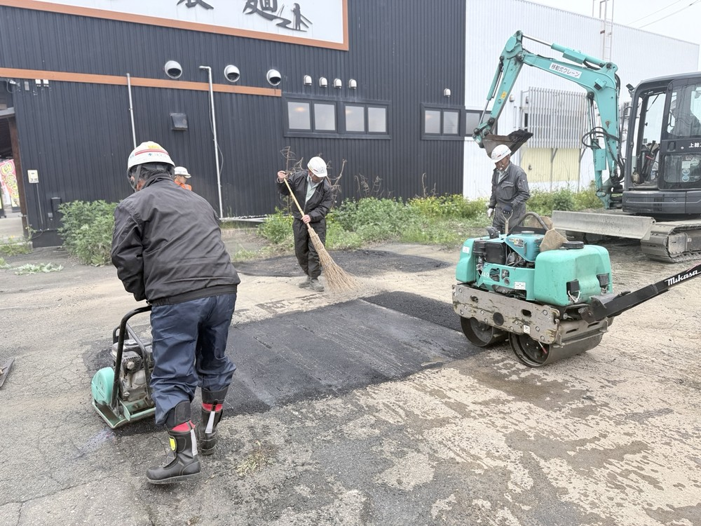
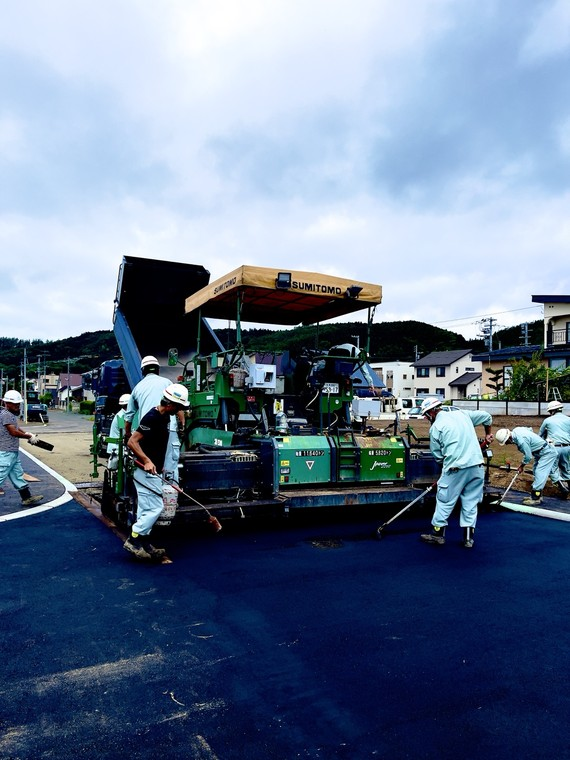
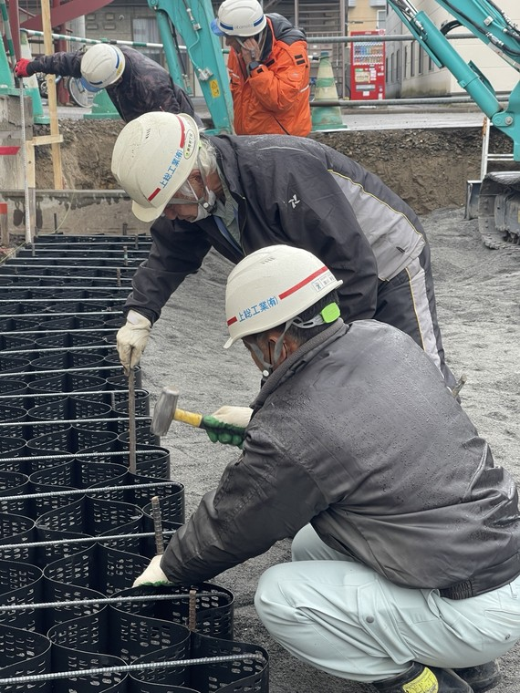

月給24万円〜30万円に、残業代・出張手当・各種手当が加わります。
上総工業について
上総工業有限会社は、北海道北見市を中心に、道路補修や個人宅のアスファルト修繕などを行う土木・舗装工事会社です。地域インフラを守る安定した仕事で、年間を通じて仕事量があります。
未経験でもちゃんと稼げます
未経験スタートの先輩も達成中。長く続けるほど技術と収入が伸ばせます。
週休2日制で、有給相談もOK。家族との時間も守りやすい働き方です。
仕事内容
北見エリアの道路を守る、舗装工事がメインです。1日の作業をしっかり決めてから動くため、初めての方も迷わず作業に入れます。正社員・アルバイトともに、働き方は相談できます。
- 道路の補修
- 個人宅のアスファルト修繕
- 道具・資材の準備、運搬
- 2t・4tトラックでの運転業務
実際の仕事風景




上総工業で働く理由
💰
未経験から収入UP
残業代や冬期出張手当もあり、年収400万円以上を目指せます。
🤝
未経験でも始めやすい
先輩が作業の流れから教えるので、初めてでも安心です。
📍
転勤なし
北見エリア中心。地元で腰を据えて働きたい方に向いています。
❄
冬期出張で収入UP
1〜3月はさいたま市方面の出張あり。しっかり稼ぎたい人に向いています。
1日の流れ
準備・運搬
道具や資材を準備し、現場へ運びます。最初はここからスタート。
現場作業を習得
先輩の指導のもと、補修や整地などを少しずつ覚えます。
運転業務も担当
慣れてきたら、2t・4tトラックでの運転業務も担当します。
チームで完成
舗装・土木工事をチームで仕上げ、片付けまで行います。
募集要項
- 職種
- 土木・舗装作業スタッフ
- 雇用形態
- 正社員／アルバイト
- 勤務地
- 〒090-0052 北海道北見市北進町5丁目4-56
転勤なし／マイカー・バイク通勤可 - アクセス
- 「高栄西町1丁目」バス停より徒歩2分／西北見駅より車5分
- 勤務時間
- 8:00〜17:00（実働7時間30分／休憩90分）
月平均残業20時間 - 給与
- 正社員：月給240,000円〜300,000円
アルバイト：時給1,300円
正社員は月収40万円超・年収400万円以上も可能 - 手当
- 交通費、残業代全額、出張手当
- 休日
- 週休2日制（日曜＋会社カレンダー）／年間休日105日
- 休暇
- GW、お盆、年末年始、有給休暇
- 必須
- 普通自動車運転免許
- 歓迎
- 中型自動車免許／土木・舗装工事経験／異業種からの転職／ブランクOK／第二新卒

求めている人材
こんな方を歓迎します
- 体を動かす仕事がしたい方
- 安定した収入を長く得たい方
- チームで助け合いながら働きたい方
- 未経験からしっかり稼ぎたい方
待遇・福利厚生
- 昇給年1回（前年度実績：月11,500円〜）
- 賞与年2回（前年度実績：11万円〜）
- 退職金共済加入、資格取得支援制度あり
- 社会保険完備、無料駐車場あり
職場環境
創業以来、北見エリアを中心に土木・舗装工事で実績を積んできた会社です。スタッフは幅広い年代が在籍しており、年齢の壁なく和気あいあいとした雰囲気。代表との距離も近く、仕事や働き方の相談も気軽にできます。
よくある質問
Q未経験でも大丈夫ですか？
Aはい。道具・資材の準備や運搬から始め、先輩の指導のもと少しずつ覚えられます。
Q体力に自信がないと厳しいですか？
A体を動かす仕事ですが、最初からすべてを任せるわけではありません。
Q冬期出張はありますか？
A1〜3月にさいたま市方面への出張があります。出張手当は別途支給します。
Qアルバイトでも応募できますか？
Aはい。アルバイトも募集しています。時給は1,300円です。
Q応募前に話だけ聞けますか？
A可能です。仕事内容や働き方の相談、見学希望だけでも歓迎です。
まずは話を聞いてみませんか？
正社員希望・アルバイト希望どちらも歓迎。応募前の相談、仕事内容の質問、見学希望も歓迎しています。
上総工業有限会社